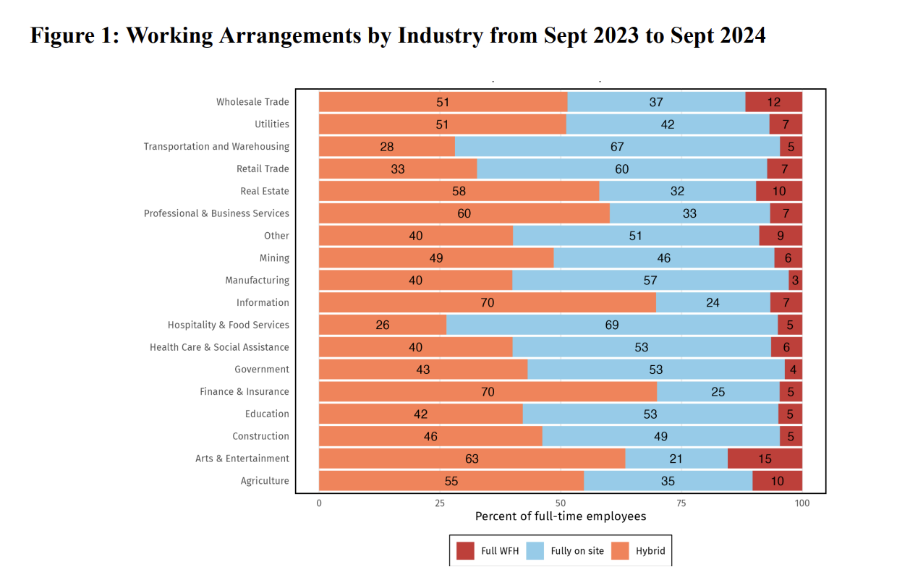
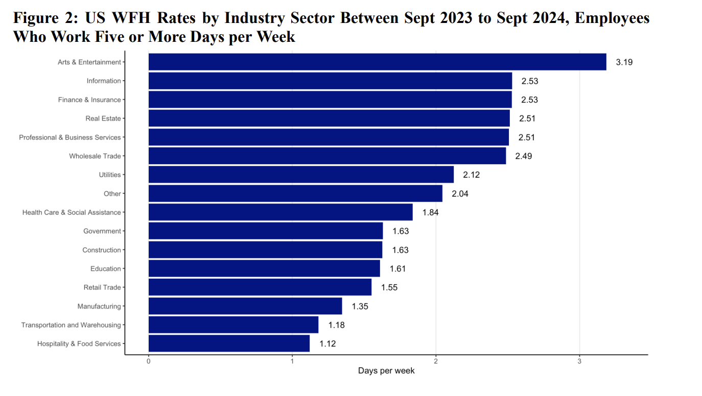
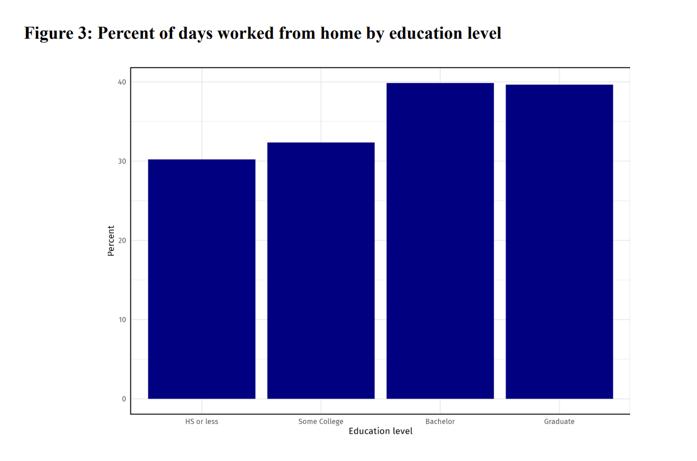

Work From Home
Pajamas & Paychecks: How Work From Home Policies Are Reshaping Unemployment Across the U.S.
By Adam Koplik, Kevin Cavicchia, and Simon Le
Overview
This project looks at how remote work policies — both fully remote and hybrid — are affecting unemployment rates across industries in the U.S. As remote work continues to reshape the labor market post-pandemic, we wanted to see whether encouraging work-from-home arrangements helps or hurts job retention within different sectors.
Data Sources
- Survey of Working Arrangements and Attitudes (SWAA) — monthly survey on work arrangements since 2020
- Bureau of Labor Statistics (BLS) — industry-level unemployment data
- American Time Use Survey (ATUS) — telework potential scores by industry
- State policy data from Oklahoma, Maryland, Vermont, and Wisconsin on remote work incentives
Methods
We took a two-stage regression approach: 1. Stage 1: Measured how state-level remote work policies affected the share of remote workers within industries. 2. Stage 2: Measured how changes in remote work share impacted industry unemployment rates.
We differentiated between: - Fully remote work - Hybrid (part-time remote) work
Used control variables for age, gender, race, education, and state/time fixed effects to isolate the effects.
Key Results
- Fully remote work policies slightly increased unemployment rates within affected industries.
- Hybrid work policies had the opposite effect — reducing unemployment rates by about 1.6 percentage points for every 1% increase in remote work share.
- Hybrid work seems to offer a sweet spot: providing flexibility without sacrificing job stability.
Fun fact: Hybrid work has become the new normal, with over 47% of U.S. employees working in some sort of hybrid arrangement by late 2023.
Visualizations

 
Takeaways
Remote work’s impact on unemployment isn’t straightforward. Fully remote policies might lead to layoffs or restructuring in industries where physical presence matters. Hybrid work, though, seems to strike a good balance between productivity and flexibility, making it a safer bet for policymakers trying to protect jobs.
Tools Used
- R, RStudio
- Stata
- SWAA, BLS, ATUS datasets
- LaTeX (for academic writeup)
Limitations
- Only four states had remote work policies in place during our study window, limiting generalizability.
- SWAA data is pooled cross-sectional — can’t track individual workers over time.
- Variations in industry labeling across datasets required careful manual standardization.
Full Paper
📥 Download the full PDF paper here
Built for my Labor Economics seminar at Hamilton College (Spring 2024).